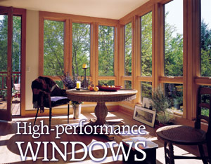
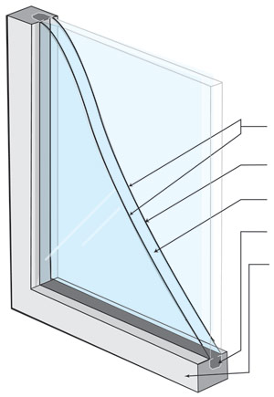
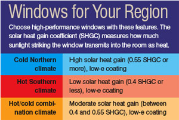
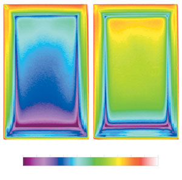
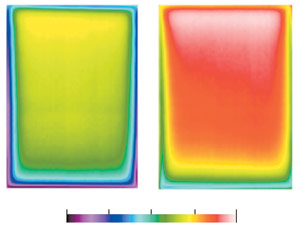
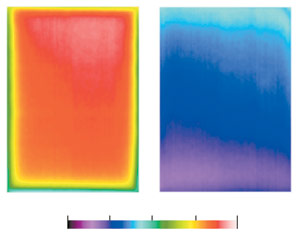

High-Performance Windows
Modern choices can save you money on heating and cooling your home.
By Greg Pahl
December/January 2005
Most people choose new windows based on appearance, style, convenience and price. Energy efficiency might not be a consideration, but this important factor actually should take top priority. Although high-performance windows initially cost more, they provide greater comfort, increase the value of your home and save you money in the long run. Heating and cooling expenses account for 44 percent of an average home’s energy bill. According to the U.S. Department of Energy (DOE), high-efficiency windows could reduce that bill by up to 25 percent. High-performance windows can even lower the cost of a new home because you may be able to install a smaller, less expensive heating and cooling system.
High-performance windows are available in such a wide array that the average homeowner might not know where to begin. “At last count, there were some 4,000 different window manufacturers in this country, so you have to look carefully,” says Bill Prindle, deputy director of the American Council for an Energy Efficient Economy. Unlike some household products, windows are relatively expensive and fairly permanent, so taking the time to become educated about the many choices will be time well spent.
There are several window rating systems. “They basically give you a benchmark of high efficiency for a given climate,” Prindle says. Energy Star is a government-backed program that distinguishes products that meet strict efficiency guidelines set by the Environmental Protection Agency and the DOE; the Energy Star label will help you find the best high-performance windows. The nonprofit National Fenestration Rating Council (NFRC) provides information for windows and skylights that are similar to fuel economy ratings on new cars. NFRC labels detail independent verification of product performance and allow homeowners, architects and builders to compare windows’ energy ratings. An NFRC rating is required in order to receive an Energy Star certification.
Another excellent source of objective information is the Efficient Windows Collaborative, which provides comprehensive information on the many features to consider when you buy windows. It will help you understand the basics of window energy transfer and how to interpret the manufacturer’s specifications. “It’s fairly nontechnical, and it can be a good resource for people who want to go into more depth than the Energy Star label,” Prindle says. (For more sources of information, see “High-performance Window Resources.”)
Explaining Efficiency
The rating systems help you evaluate three main factors that impact the energy efficiency of windows. The first is heat flow through the glass and frame, which is generated by the temperature difference between the inside of your home and the outside environment. This is often thought of as a winter issue, but it can be just as important in the summer - especially in hot climates. Heat transferred through a window is expressed with U-values; the lower the U-value, the better. The resistance to that heat flow is expressed as an R-value (the mathematical inverse of U). In general, the higher the R-value, the better the insulation.
Multiple panes of glass are the best way to increase R-values because they increase the number of barriers between the outdoors and the interior of your home. More than two panes are rarely necessary except in extreme climates. Microscopically thin layers of clear metal oxides applied to the glass during production, called “low-emissivity” or “low-e” coatings, further help to reduce radiant heat transfer between panes of glass by reflecting some or all of the infrared radiation and heat flow exchanged between glazing layers. These coatings stop the heat, but let most of the sunshine through. Conversely, low-e coatings also keep your home’s warmth inside during the winter.
“Most low-e coatings are designed to make a minimal sacrifice of visible transmission [clarity] while providing dramatic improvements in U-value and solar heat gain,” says Howdy Goudey, an engineer with the Lawrence Berkeley National Laboratory (LBNL). “Sometimes a very small reduction in visible transmission of a low-e window is noticeable if it’s viewed side by side with a clear glazing, but it would be nearly impossible to distinguish an entirely low-e glazed house from one without low-e.”
The second major factor is solar heat gain, also referred to as the solar heat gain coefficient (SHGC). Put simply, the SHGC measures how much of the sun’s energy (both visible and near-infrared light) striking the window transmits as heat into the room. The SHGC is based on a scale of zero (for no heat gain) to 1 (for 100-percent heat gain). The SHGC also measures how much solar heat passes through the frame, rather than just the glass.
In cold Northern climates, you will want high solar heat gain to capture as much of that passive solar energy as you can; an SHGC of 0.55 and higher is recommended for this region. In hotter Southern climates, however, a lower SHGC of 0.4 or less is suggested to keep the solar energy out. In climates where heating and cooling are equally important, an SHGC between 0.4 and 0.55 is best.
The third factor that affects a window’s energy efficiency is air leakage. This is the air that flows through cracks between the sash and the frame, or at the point where the window connects to the wall. The lower the leakage value, the better; look for windows with air-leakage rates of less than 0.3, a measurement of the cubic feet of air that passes through a square foot of window area per minute.
Through the Glass Darkly
To achieve an even lower SHGC than is possible with low-e coatings, it is necessary to start rejecting significant portions of visible light energy using tinted glass. Glass tints are generally the result of colorants added to the glass during production, although some tints also are produced by adhering colored films to the glass following production (but this will negate most window warranties). Tinted glass has drawbacks - it absorbs heat, which can actually increase the SHGC unless the windows have multiple panes. “In controlling solar gain, it is much more effective to reflect solar radiation using low-e coatings rather than to absorb it, because this eliminates the problem of dissipating the absorbed energy,” Goudey says.
Tinted glass usually is selected for aesthetic purposes. Reducing visible transmission means reducing natural interior lighting, which ultimately means you’ll have to use additional interior lighting and deal with its associated energy load and heat input, Goudey says. In general, choose windows with high visible transmission that freely admit daylight, minimizing the need for artificial lighting. “Most people want as much visible light as possible,” says Christopher Mathis, president of MC Squared, an energy-efficiency consulting firm in Asheville, N.C. “In general, I don’t think that tinted glass is a good choice for residential settings.” At the very least, get a sample of the glass before you order your windows. Take the sample outside and look through it carefully from a variety of angles before you make a final decision. For special situations when tinted glass is desirable, the visible transmission range can run from as much as 90 percent for almost clear glass down to a rather dim 15 percent for some heavy-tinted varieties.
The appropriate type of low-e coatings and tints actually can be different for different parts of your home. In a cold climate, select windows with high solar heat gain properties for the south side of your home, and windows with lower heat gain for the north, east and west sides. If you have questions, seek the advice of a dealer or professional consultant.
Between the Panes
Determining the right combination of coatings for your windows is important, but what’s between them also is a matter of concern. All double-pane glazing is held apart by a “spacer.” Less expensive thermal-pane windows typically use aluminum spacers. Unfortunately, aluminum is highly conductive, which causes the edges of these windows to be colder and encourages condensation, or on cold days, frost formation on the inside edges of the glass. This moisture can induce the growth of mold and rot. To diminish this problem, higher quality windows use less conductive materials such as stainless steel, foam, plastic or rubber - all of which can increase the edge temperature by about 5 degrees and improve the U-value of the entire window unit by about 10 percent. Insulated “superwindows” with three or more layers of glazing and low-e coatings can eliminate condensation.
Another popular strategy to improve the insulating properties of the window is to replace the air inside the thermal pane with a gas such as argon (the least expensive and most commonly used) or krypton; both are harmless to humans. Some concerns have been expressed about leakage of these gases over time, which would reduce energy efficiency. But this is not a major problem with most high-quality windows. “There are some very, very low leakage rates of a fraction of a percent per year,” says Stephen Selkowitz, department head of the Environmental Energy Technologies Division at the LBNL. “In 20 years this might amount to a 10-percent change in the gas.” That would be an unmeasurable impact on the total performance of the window.
Framing the Debate
Because the sash and frame account for between 10 percent and 30 percent of the total window unit (depending on its overall size), the thermal characteristics of the materials used to make them are important. The industry continues to debate which window frame material is the best. The most popular materials are wood and vinyl, followed by aluminum, fiberglass and an increasing number of hybrids and composites. Each of these materials has its advantages and disadvantages. Generally, wood and vinyl perform equally well from a thermal standpoint. Aluminum is less effective, but adding a thermal break can improve its performance. Complicating things even further, most wood windows are clad with aluminum or vinyl for easier exterior maintenance, making it difficult to tell what the window is made of simply by looking at it. Fiberglass frames are strong and stable, and like vinyl, they can contain air cavities. When the cavities are filled with insulation, fiberglass frames can have a thermal performance better than wood or vinyl.
Do It Right
Even the best window on the market may not perform as advertised if it is improperly installed. “If windows are not properly installed, you can get air leaks around the outside of the frame or, even worse, you can get water intrusion into your walls, which will eventually rot the wall,” Prindle says. (See “Install Your Own Windows.” - MOTHER) Proper installation is key, and regardless of who installs the window, it’s important to know the manufacturer’s specifications for installation in order to get the best results.
If you hire a window installer, it’s important to understand that window renovation projects arranged through big-name home-improvement organizations will not necessarily be any better than those completed by small contractors.
“Some of the big companies profit from their name recognition, but they tend to charge relatively high markups to cover their marketing expenses and subcontracting fees for the actual installers,” Prindle says. “Going with a reputable local contractor can result in an equal or better product at a better price.” It’s always a good idea to ask for references and to check with previous customers to make sure they were happy with their installation before you proceed with any window project, regardless of who the contractor is - and don’t forget to check the warranty.
“Warranty provisions on windows range from the simple to the sublime,” Mathis says. “If it says ‘lifetime warranty,’ it makes me nervous because ‘lifetime’ is usually written in big, bold letters. But as the old saying goes, ‘The large print giveth, while the small print taketh away.’” A high-quality warranty, however, will address these worries because the manufacturer will stand behind its products.
Although more choices of windows are available now than ever before, the decision to invest in energy-efficient windows is not a difficult one. They help save on heating and cooling bills, conserve your home’s energy, increase the value of your home, make it more comfortable - plus they look great. With careful planning, you’ll only have to buy them once in your life. Once they’re installed, just sit back and enjoy the view!
- Greg Pahl is the author of Natural Home Heating: The Complete Guide to Renewable Energy Options (Chelsea Green Publishing). To order, go to Mother Earth Shopping.
High-performance Window Resources
Energy Star
www.energystar.gov
The U.S. Department of Energy and the Environmental Protection Agency have developed an “Energy Star” designation for products meeting certain energy performance criteria.
National Fenestration Rating Council
www.nfrc.org
A nonprofit organization that administers the only independent rating and labeling system for the energy performance of windows, doors and skylights.
American Architectural Manufacturers Association (AAMA)
www.aamanet.org
The association’s certification appears on most residential windows and means that the product conforms to standards for air and water infiltration, structural integrity and resistance to forced entry.
Efficient Windows Collaborative
www.efficientwindows.org
This Web site provides a wide range of objective information on energy-efficient windows, how they work and recommendations for their selection and use.
Lawrence Berkeley National Laboratory; Windows & Daylighting
windows.lbl.gov
Provides a wealth of information about window performance for residential and commercial settings, as well as software tools to help calculate energy, optical and thermal performance.
Window & Door Manufacturers Association (WDMA)
www.wdma.com
Represents approximately 145 U.S. and Canadian manufacturers and suppliers of windows and doors. It offers comprehensive information on windows, skylights and doors, and links to manufacturers.
|
 Courtesy Andersen Windows Modern choices can save you money on heating and cooling your home. |
 Courtesy U.S. Department of Energy This cross section shows the construction of energy-efficient windows that protect your home against outside temperatures. |
 Courtesy U.S. Department of Energy The annual cost and energy (in millions of British thermal units) savings for Energy Star-qualified double-pane windows over common single-pane windows, based on population-weighted regional average annual energy use for a 2,000-square-foot single-story house with 15-percent glazing, gas heat and electric air conditioning. Estimates use August 2004 state average utility rates. Actual savings will vary by region and home characteristics. For more information about this chart, go to www.energystar.gov/windows. |
|
 Courtesy Lawrence Berkeley National Lab Clear window (left) versus low-e coated, argon gas-filled window; both double-pane, 32-degree exterior. Scientists at the Lawrence Berkeley National Lab use thermal imaging to show heat gain and loss on window materials. For more information about these images, go to the lab’s thermal imaging Web page (windows.lbl.gov/facilities/irlab/therms.html). All temperatures are listed in Fahrenheit. |
 Courtesy Lawrence Berkeley National Lab Clear glass (left) versus low-e coated; both double-pane, 32-degree exterior. Scientists at the Lawrence Berkeley National Lab use thermal imaging to show heat gain and loss on window materials. For more information about these images, go to the lab’s thermal imaging Web page (windows.lbl.gov/facilities/irlab/therms.html). All temperatures are listed in Fahrenheit. |
 Courtesy Lawrence Berkeley National Lab Double-pane (left) versus single-pane; both 32-degree exterior. Scientists at the Lawrence Berkeley National Lab use thermal imaging to show heat gain and loss on window materials. For more information about these images, go to the lab’s thermal imaging Web page (windows.lbl.gov/facilities/irlab/therms.html). All temperatures are listed in Fahrenheit. |
|
 |
|
|